需要的东西
- Codeanywhere 账号注册（用于 Heroku 环境配置）
- Heroku 账号注册
部分说明
- 由于 Huginn 是基于 Ruby 的，所以需要配置 Ruby 的环境。我们这里使用 Codeanywhere，就省去了配置 Ruby 环境。
- Cloud9 是一个云端的 IDE，配置好了安装 Huginn 的所有环境，但是注册需要信用卡。（如果你有信用卡我推荐你使用这个。）我们这里使用 Codeanywhere，二者没有特别大的区别，Codeanywhere 比 Cloud9 少了 Heroku 的环境，我会详细说明如何在 Codeanywhere 上配置 Heroku 的环境。
部署步骤
- 登陆 Huginn Github 主页的 Deployment 部分，找到 Heroku 的按钮。然后点击，就会跳转到你的 Heroku 了。
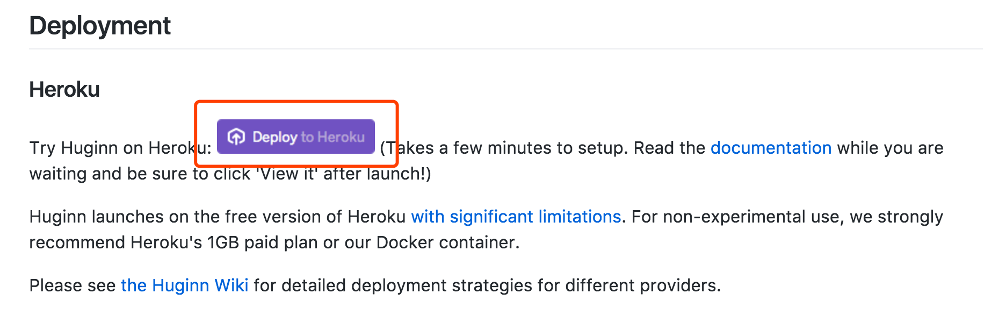
- 点完按钮之后会跳转到你的 Heroku 界面。去起个名字。
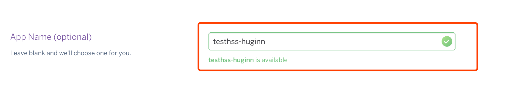
- 起晚名字什么都不点，直接拉到最后点 Deploy 的按钮。
之后它就会开始 build 了。等会就行。
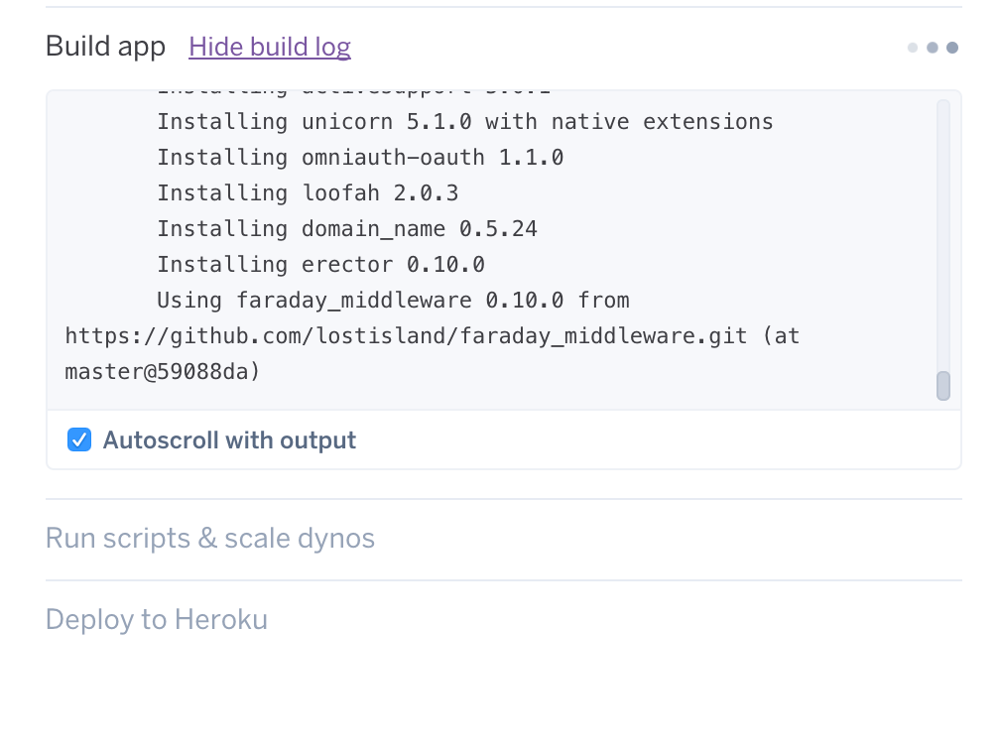
这里 View 就直接到建立好的网站了，Manage App 会跳转到 Heroku 管理界面。我们点击 View。
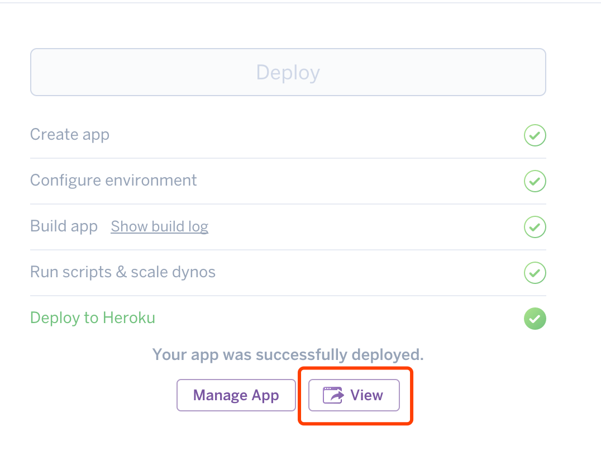
- 这样就进入到网页了。这里 Huginn 很人性化的把步骤贴出来了。由于我们用的是自动安装，所以没有创建管理员用户，也有一些东西需要配置。（可以看到已经可以访问域名了）
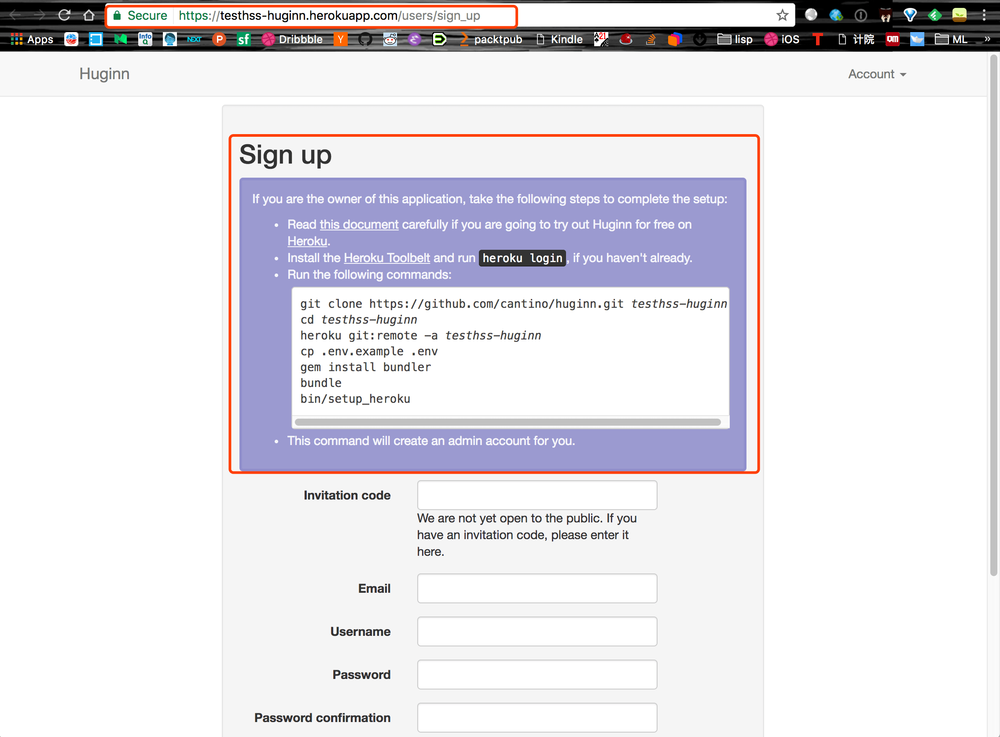
现在我们对照着 Huginn 的说明来做。
- 登陆 Codeanywhere，点击右上角的 Editor。
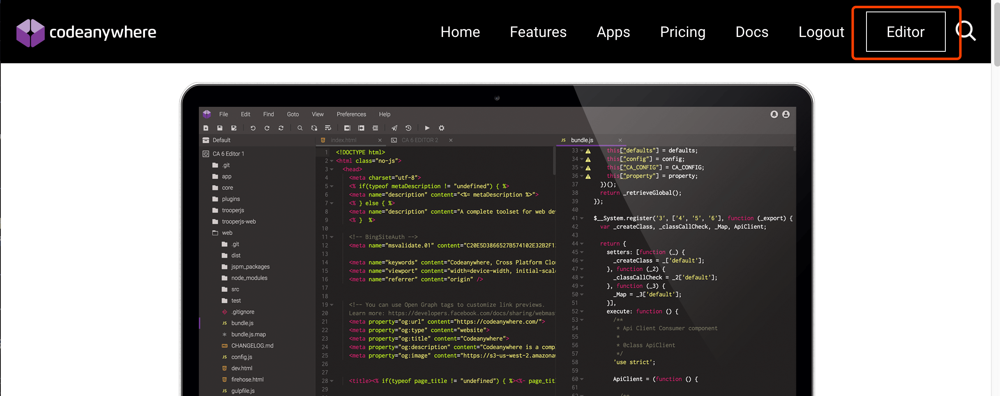
会进入一个选择界面，如我截图。
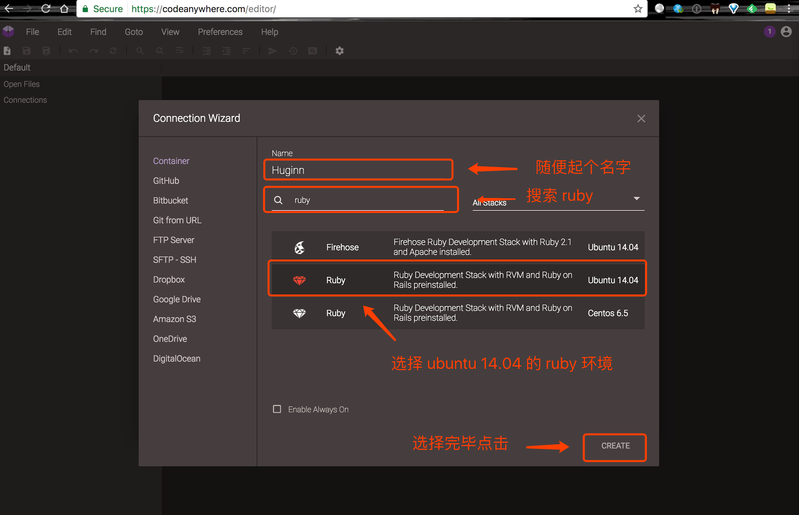
第一次的话点完 Create 会让你验证邮箱，验证完邮箱对着上图再做一遍就可以了。
- 我们首先要下载新版本的 ruby 环境。
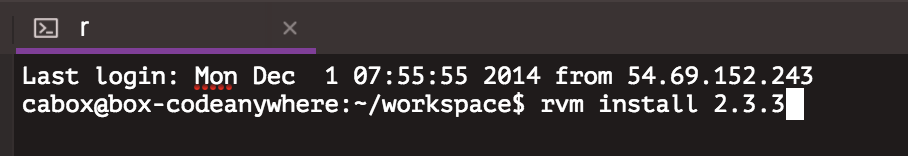
安装完毕后使用。
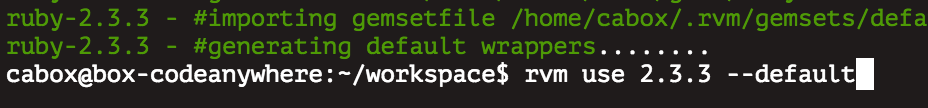
下面的话，我写了一个脚本。这样你只需要输入很少的命令就可以了。
点击文件 新建文件。
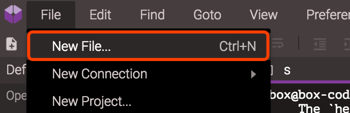
上 huginn.sh，复制到 Codeanywhere 的文件编辑器里。然后点击右上角保存。
保存到根目录下，文件名保存为 huginn.sh。
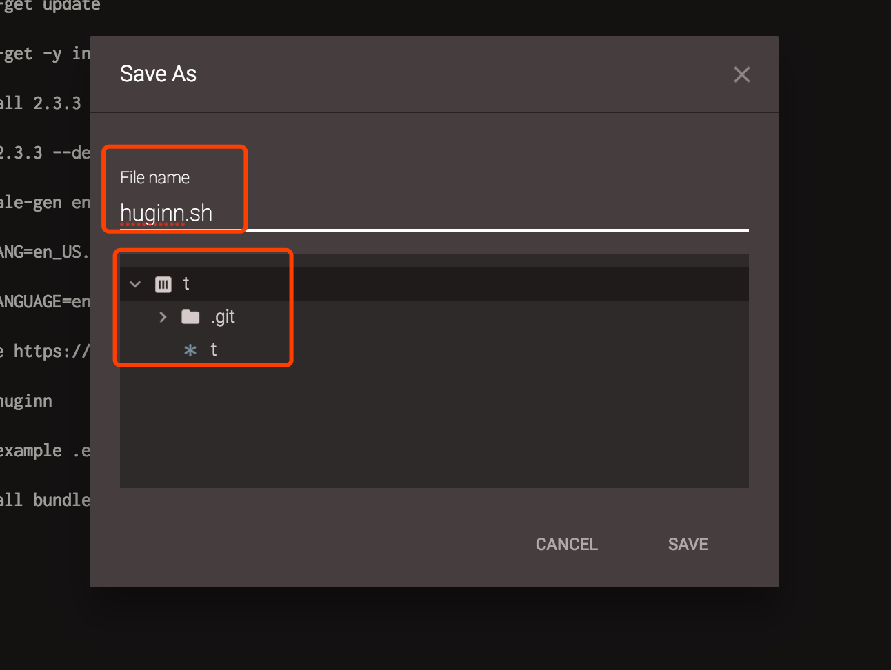
然后在你的 Heroku 界面找到下图的地方。
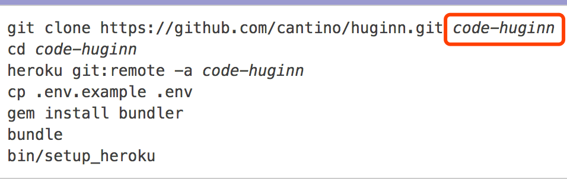
替换我写的脚本的以下地方。
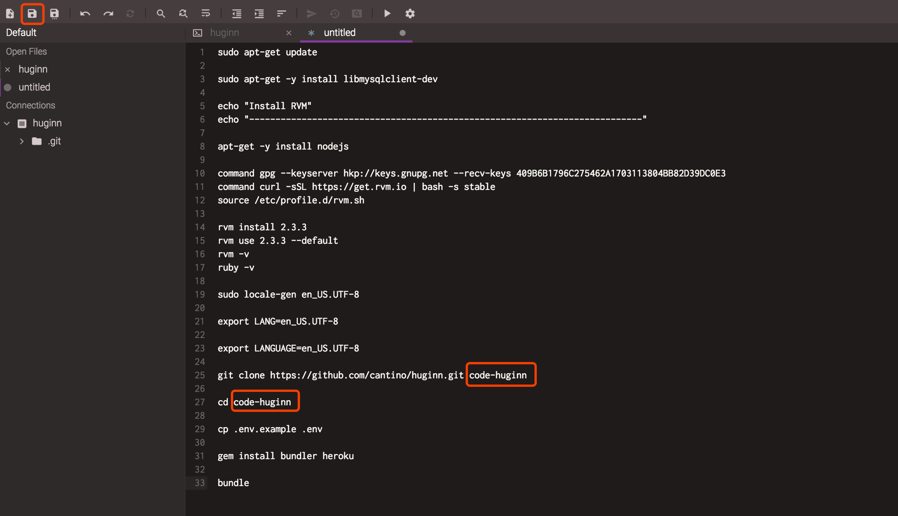
然后执行脚本 huginn.sh，bash 是执行的意思。
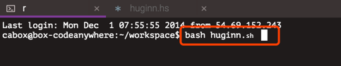
执行完毕之后。
先进入 cd code-huginn/（这里的 code-huginn 输入你刚替换我文件中的名字就好）。
在命令行登陆你的 heroku ，就是在命令行输入 heroku login。
之后执行 heroku git:remote -a code-huginn。
最后执行 bin/setup_heroku。
剩下的就是开始自动配置了。
几点说明
- Heroku 部署很简单，利用我写的脚本应该很快。
- Heroku 有时间限制，有时候网站会挂，官方推荐可以使用 uptimerobot 来持续网站运行。参考官方文档。